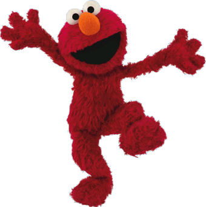
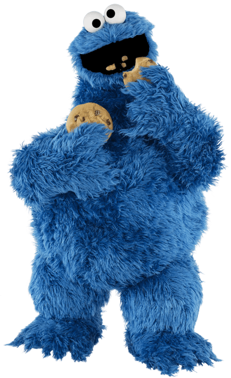
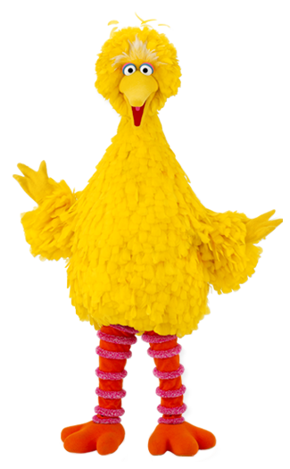
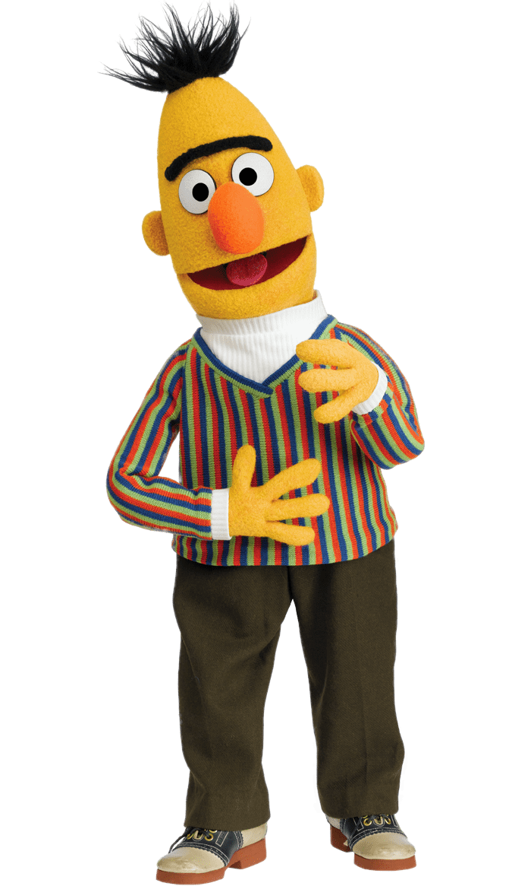
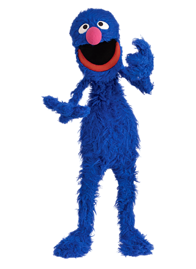
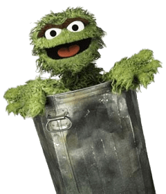
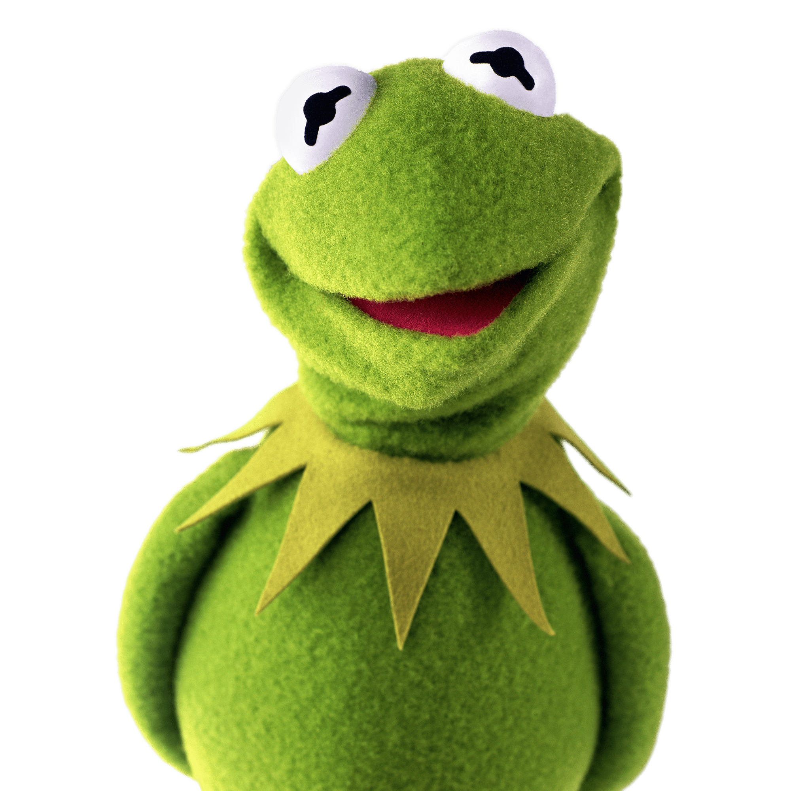

Most Known Characters
- Elmo
- Cookie Monster
- Big Bird
- Bert
- Grover
- Oscar the Grouch
- Kermit the Frog
There are an abundance of characters on the Sesame Street program, however, there are seven main ones that are the most widely known.
Elmo

Cookie Monster

Big Bird

Bert

Grover

Oscar the Grouch

Kermit the Frog
